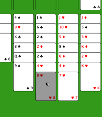
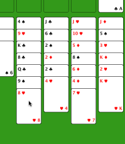

Comment jouer ?
Il est facile de jouer. Cliquez sur la carte (ou la colonne) que vous voulez déplacer, celle-ci apparaitra en grisé. Cliquez ensuite sur la destination et la carte sera déplacée (si l'action est valide). Si vous faites une erreur (ou plusieurs), vous pouvez toujours annuler autant de déplacements que nécessaire.
|  | Ici, nous allons déplacer le six de carreau sur le sept de trèfle. On clique sur la deuxième colonne et la dernière carte est grisée. |
|  | Maintenant, on clique sur la quatrième colonne et la carte est déplacée. On aurait pu aussi déplacer la carte sur l'une des cases libres en haut en cliquant sur celles-ci. |